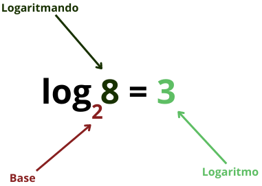

LOGARITMOS
O QUE SÃO LOGARITMOS?
O Logaritmo é uma operação matemática que está relacionada com as Nele buscamos
encontrar o expoente que faz com a BASE seja igual ao LOGARITMANDO
.
Na prática estamos resolvendo equações exponencias, entretanto, com essa operação surgem propriedades
importantes que auxiliam nas resoluções.
Para resolver um logaritmo, é essencial o
DOMÍNIO DA OPERAÇÃO e das
propriedades existentes para ele, as quais são muito parecidas com as propriedades das
POTÊNCIAS
Chamamos de Logaritmo de a na base b,
o valor x, tal que a elevado a x seja
igual a b.
Vejamos um exemplo:
Sabemos que 2³ = 8
Então, dizemos que:

Leia-se: o logaritmo de 8 na base 2 é 3
Isso significa que a resposta de um Logaritmo é um expoente
.
CONCLUSÕES
1: O Logaritmo pode se transformar numa equação exponencial
.
2: O Logaritmando não pode ser zero
nem número negativo.
3: A base não pode ser zero, nem 1,
nem negativa.
4: Para o cálculo de alguns logaritmos, a transformação em equação
exponencial não ajuda, então usaremos outros métodos.
CLASSIFICAÇÃO: Fácil